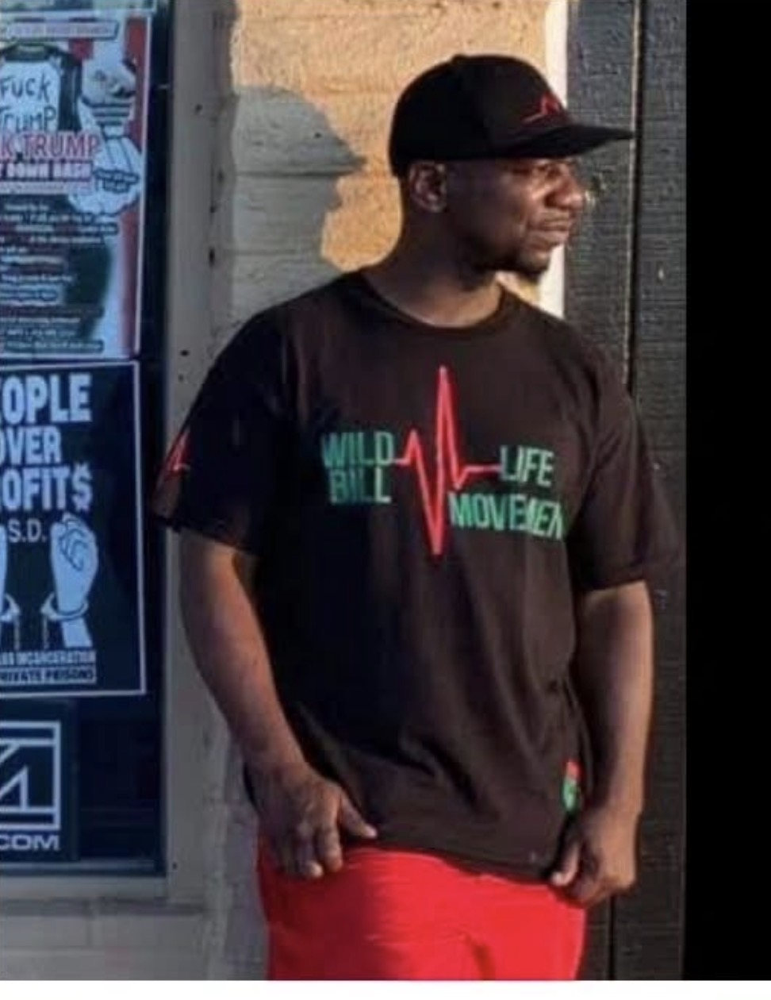

Featured Narrative
When Standing Up Becomes “Resisting”
Published by Resist to Exist Campaign
Write the opening paragraph here. This should explain who the person is, what happened, and why their story matters to the campaign against standalone PC 148 charges.
Write the full narrative here. Include the encounter, what officers said, how the charge was used, what happened in court, and how the incident affected the person’s life, family, work, organizing, and safety.
End with a clear call to action: donate, attend court support, file complaints, share the campaign, or contact the organization.
Organizer Story

Muslah Abdul-Hafeez
Published by Resist to Exist Campaign
After decades of experiencing and witnessing police abuse,
Muslah Abdul-Hafeez began advocating for community members who
were subjected to police brutality and misconduct.
Officers would often attend community events, such as
"Coffee with a Cop," where they interacted with residents in
a professional and empathetic manner. However, many of these
same officers were later accused of engaging in racial
profiling, harassment, and the use of excessive force against
community members.
As a result of Muslah's advocacy and the work of his police
accountability unit—which trained more than 20 community
members to lawfully monitor police activity in the field—he
became the target of retaliation by the gang unit and was
charged with five counts of Penal Code section 148.
Muslah exercised his right to a jury trial, where officers
testified against him. After hearing all of the evidence,
the jury acquitted Muslah of all charges.
Despite his acquittal, the retaliation has continued.
Muslah alleges that law enforcement has now sought to
suppress his First Amendment rights by pursuing a restraining
order that would limit his ability to engage in police
accountability work, monitor law enforcement activities,
and speak publicly about what he believes are ongoing harms
caused by police misconduct.
Video Testimony
Community Members Speak Out
Published by Resist to Exist Campaign